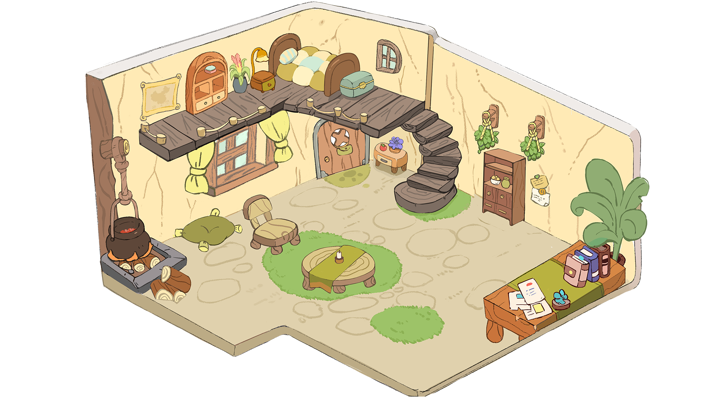
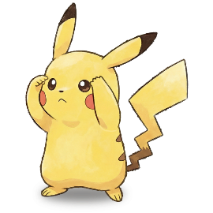

旅行足迹
地图加载失败，请检查网络
使用 assets/map/china-kawaii-map.png 作为本地备用
记录新旅程
去打卡
返回宠物小屋
宠物小屋
比卡丘在准备出发～
✨
未知人格
未知
未知
重抽人格盲盒
展开称呼设置
宠物平时怎么称呼你？
伙伴
爸爸
妈妈
训练家
伙伴
铲屎官
自定义
小火苗
小灯泡
小云朵
小石头


正在期待旅行... ✨
🗺️
地图
📚
日记
🎁
橱柜
🍲
小锅
💬
正在期待旅行... ✨
左右滑动、双指缩放可查看小屋
长按指纹传递能量，点击场景发现惊喜
今天
温馨小屋
🐰
你好！我是你的专属伴游宠物。我已经准备好和你一起走遍中国啦，快带我去打卡吧！
×